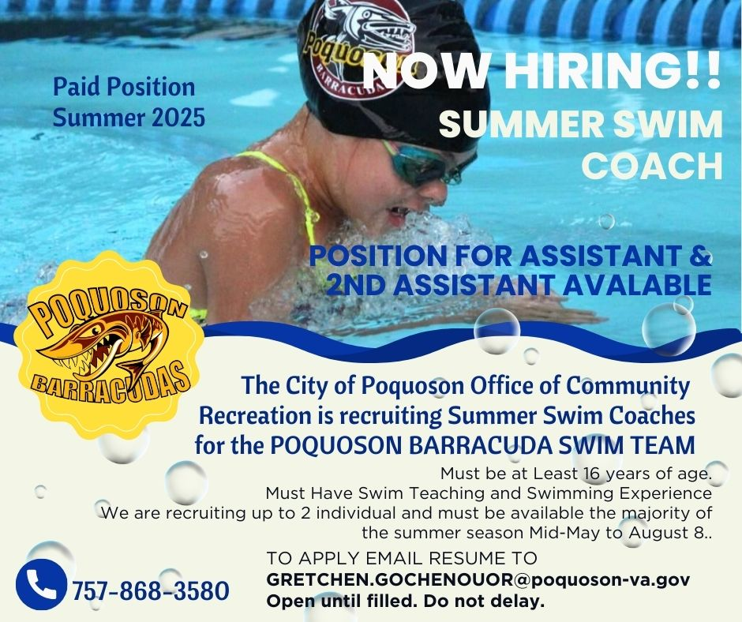

Are you a passionate swim coach looking for an exciting opportunity to lead and inspire a team of dedicated athletes? Do you have a knack for cultivating a positive and supportive environment where swimmers can thrive? Colony Pool in Newport News is seeking a Head for the upcoming summer season!
About Us: Colony Pool is one of the oldest and largest pool in the area. We are currently the only private pool with a high dive. We take pride in our commitment to fostering a welcoming and inclusive environment where swimmers of all ages and abilities can develop their skills and love for the sport. Our team values sportsmanship, camaraderie, and personal growth both in and out of the pool. When families join Colony Pool and the Cudas swim team, they become part of a family that encourages and supports each other.
Job Description:
Head Coach:
Qualifications:
If you're ready to make a splash as part of the Colony Pool coaching team, please contact either:
Don't miss out on this fantastic opportunity to lead and inspire young swimmers in our community! We look forward to welcoming enthusiastic coaches to the Colony Pool family!
Are you a passionate swim coach looking for an exciting opportunity to lead and inspire a team of dedicated athletes? Do you have a knack for cultivating a positive and supportive environment where swimmers can thrive? Marlbank Pool in York County is seeking both a Head Coach and Assistant Swim Coaches for the upcoming summer season!
About Us: Marlbank Pool is a vibrant community hub nestled in the heart of York County. We take pride in our commitment to fostering a welcoming and inclusive environment where swimmers of all ages and abilities can develop their skills and love for the sport. Our team values sportsmanship, camaraderie, and personal growth both in and out of the pool.
Positions Available:
Qualifications:
If you're ready to make a splash as part of the Marlbank Pool coaching team, please contact Jennifer Long.
Don't miss out on this fantastic opportunity to lead and inspire young swimmers in our community! We look forward to welcoming enthusiastic coaches to the Marlbank Pool family. Let's make waves together! 🌊🏊🏊
Are you passionate about swimming and coaching? Do you have a knack for motivating young athletes to reach their full potential? If so, we want YOU to join our team as an Assistant Swim Coach for the 2024 summer season with the Riverdale Rays in Hampton!
About Us: The Riverdale Rays are a dynamic and dedicated swim team located in the heart of Hampton. We pride ourselves on fostering a supportive and inclusive environment where swimmers of all skill levels can thrive. Our team is committed to excellence both in and out of the pool, promoting sportsmanship, teamwork, and personal growth.
Position Overview: As an Assistant Swim Coach, you will work closely with our Head Coach to develop and implement training programs, provide technique instruction, and inspire our athletes to achieve their goals. This role offers a fantastic opportunity to gain valuable coaching experience, make a positive impact on young lives, and become an integral part of our tight-knit swim community.
Qualifications:
If you're ready to dive into a rewarding coaching opportunity with the Riverdale Rays, please email the GPSA Representative, Heather Rowe.
Don't miss out on this exciting chance to make a splash as part of our coaching staff! We look forward to welcoming you aboard the Riverdale Rays family. Go Rays! 🏊🏊

Are you a passionate swim coach looking for an exciting opportunity to lead and inspire a team of dedicated athletes? Do you have a knack for cultivating a positive and supportive environment where swimmers can thrive? Running Man in York County is seeking both a Head Coach and Assistant Coach for the upcoming summer season! This is an excellent opportunity for an experienced, motivated individual to lead and inspire our swim athletes.
About us: Running Man is a vibrant community located in beautiful Yorktown. We take pride in cultivating a positive, inclusive environment that emphasizes the development of strong interpersonal relationships, refinement of stroke techniques, and the creation of memorable summer experiences.
Passion for swimming and coaching Previous coaching or competitive swimming experience preferred Strong communication, leadership, and organizational skills Ability to work well with swimmers of all ages and skill levels CPR and lifeguard certification (or willingness to obtain)
If you are ready to make a splash as part of the Running Man Pool coaching team, please contact rmmrswimteam@gmail.com.
Don't miss out on this exciting chance to make a splash as part of our coaching staff! We look forward to welcoming you aboard the Running Man Manta Rays family. Go Manta Rays!
Are you enthusiastic, love to teach and love the water? Come be a swim coach for Kiln Creek Dolphins this summer. We are currently looking to hire Assistant Coaches and Junior coaches this summer.
About us: Kiln Creek Dolphins is a dedicated swim program nestled in the Kiln Creek Homeowners association in Yorktown/Newport News. This community has 21 villages and is home to the Kiln Creek Dolphins.
Position is responsible for assisting the head and junior assistant coaches with organizing the Kiln Creek Swim Team Inc. program. Position assists with conducting practices, motivating swimmers, and instructing athletes in strategies and techniques.
Position is responsible for assisting the head and assistant coaches with organizing the Kiln Creek Swim Team Inc. program. Position assists with conducting practices, motivating swimmers, and instructing athletes in strategies and techniques
If you want to have a great opportunity and a fun summer coaching, please contact Justin Hinson: justin.r.hinson3@gmail.com.